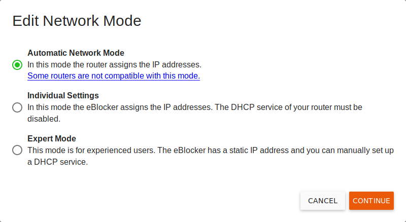

Deutsch | English
eBlocker Base ✓ / eBlocker Pro ✓ / eBlocker Family ✓
In most of all cases your eBlocker can be configured in the automatic configuration mode.
In some cases, for example if you have a special network infrastructure, it may be necessary to change the network configuration of the eBlocker in order to make optimum use of the eBlocker.
The eBlocker offers three different network modes when you click on the EDIT button:

Automatic Network Mode
In this mode your router assigns the IP addresses in your network with its DHCP service. The eBlocker is compatible with most routers, but there are a few routers that can't work with the eBlocker like this.
Individual Settings
In this mode the eBlocker assigns the IP addresses in the network. To do this, the DHCP service of the router must be switched off. The eBlocker then takes over the tasks of the DHCP service in your network. Almost all routers are compatible with eBlocker in this mode. You will be accompanied through the setup of the "individual settings" by an assistant, which will give you step-by-step assistance.
Here you will find a useful example...
Expert Mode
In this mode, experienced users can edit the network settings of the eBlocker. These settings make sense, for example, if you operate your own DHCP server in your network.